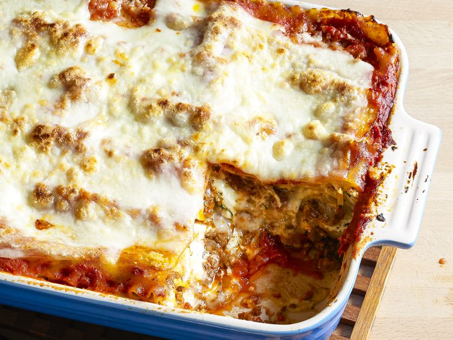

World's Best Lasagna

Recipe Description
This recipe comes from AllRecipes user John Chandler, who submitted it 20 years ago.
It is a basic meat lasagna, but adds sugar and a blend of cheeses for depth.
Ingredients
- 1 pound sweet Italian sausage
- 3/4 pound lean ground beef
- 1/2 cup minced onion
- 2 cloves garlic, crushed
- 1 (28 ounce) can crushed tomatoes
- 2 (6.5 ounce) cans canned tomato sauce
- 2 (6 ounce) cans tomato paste
- 1/2 cup water
- 2 tbsp white sugar
- 4 tbsp chopped fresh parsley, divided
- 1 1/2 tsp dried basil
- 1 1/2 tsp salt, divided
- 1 tsp Italian seasoning
- 1/4 tsp ground black pepper
- 12 lasagna noodles
- 16 ounces ricotta cheese
- 1 large egg
- 3/4 pound sliced mozzarella cheese
- 3/4 cup grated Parmesan cheese
Back to Index